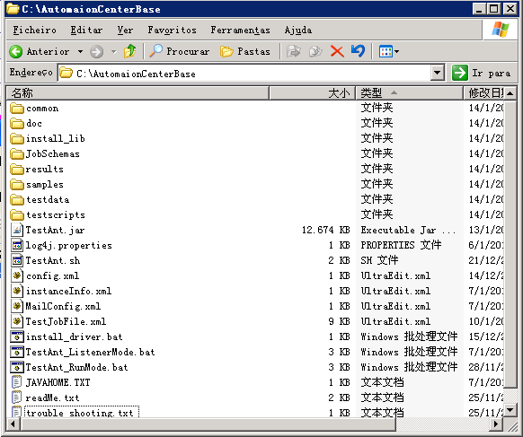
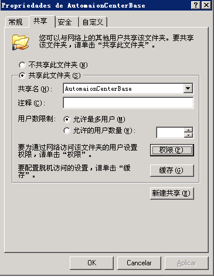
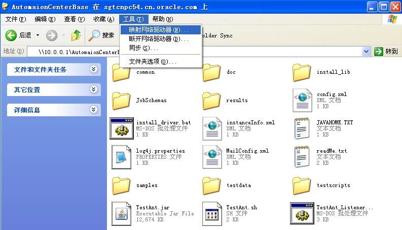
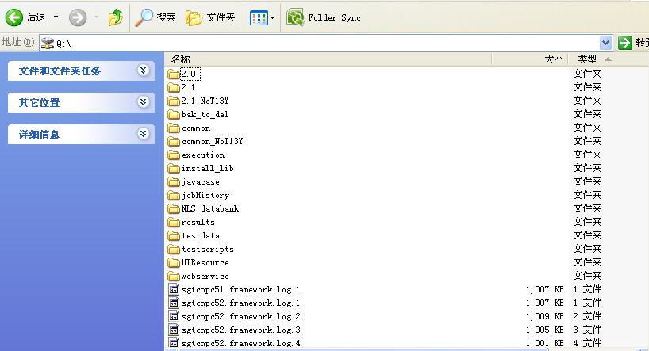

|
 |
 |
|
|
|
应用案例：部署框架实现团队协作开发在一个测试团队里，如何使用使用AC完成自动化测试的协作开发，调试，这是一个难题。
AC的应用思想是一处应用，多点调试，测试案例和报告集中管理，最大限度地减少维护成本。下面给出一个部署方案
1. 建立AC工作共享服务器
可以将AC的所有工作文件部署在一台硬盘空间较大（建议10G以上）的的服务器上。比如在某服务器10.0.0.1上C盘下建立AutomationCenterBase目录，存放AC工件，如下。
图1-1 Automation Center目录结构图
然后将AutomationCenterBase在局域网共享，共享权限设为完全控制。
在分配为运行自动化测试的主机上，寻找10.0.0.1上的共享目录，并将其映射为本地的网络硬盘。指定一个盘符，比如Q盘。
完成映射后，本机就可以像访问本地硬盘一样，读共享目录了。
2. 协作开发
测试团队的成员可在自己pc上映射Q盘，在Q盘下testscripts目录下建立自己的脚本目录，然后运行testant.bat进行本地调试开发。每次运行的结果，自动存放在results目录下。
3. 正式运行
在专属自动化测试的工作机上映射Q盘，并启动TestAnt_LisenerMode.bat，AC的agent监听程序将会启动，接收job命令。
所有正式的测试任务统一通过agent发送，AC内部有job队列会按照先到先运行的规则依次运行自动化测试job。
Agent命令格式和相关参数，请参看论坛，或发送邮件获得。
4. Log调试
在运行AC的主机上，将会生成以本机hostanme为前缀的framework.log，方便成员查看自己的log。